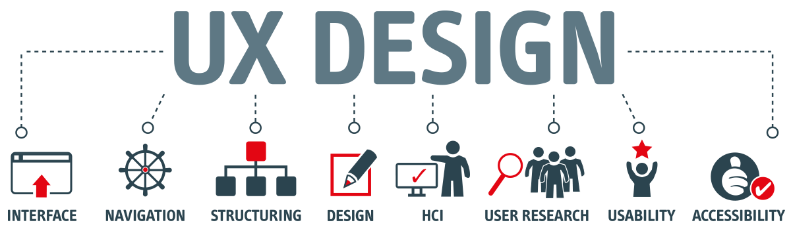

UX - User Experience
Prosessen å utvikle systemer som både er brukervennlige og engasjerende, omtales som opplevelsesdesign (user experience design eller bare UX Design)
UX kan deles opp i tre hoveddeler:
Look: Credibility, trust, Harmony & Spirit
Feel: "Joy of use", interaction & reaction
Usability: Functionality, individuality & Predictionality

User Experience (UX) handler om å skape en smertefri og hyggelig opplevelse for brukere. I et digitalt miljø er UX en kritisk faktor for suksess.
Tatt fra: https://www.adera.no/nyheter/hva-er-ux-design
Hva er UX design?
UX design blir stadig mer synlig. UX er ikke det man vanligvis snakker om til morgenkaffen, men det blir mer og mer tydelig at «brukervennlighet» er et tema de fleste ønsker å ha et større fokus på når det gjelder produkter og løsninger. Det har vært stor fremgang på denne fronten den siste tiden.
unnleggende slik at du kan få en forståelse av hva UX er. Brukeropplevelsen omfavner alt fra god kundeservice til et produkt eller en tjeneste som er lett å bruke, eller et nettsted som ga deg nøyaktig den informasjonen du var ute etter. Når vi kommer til et brukergrensesnitt som er ekstremt bra, så legger vi nesten ikke merke til det nettopp fordi det er så bra og jobben du forventer at skal gjøres blir gjort. Men om man møter på dårlig brukergrensesnitt, da setter det mange følelser i bevegelse. Man blir sint, frustrert og oppgitt, og man kjenner på disse emosjonene mye lengre enn når ting går enkelt og greit, eller rettere sagt, som forventet/ønsket. Digital design påvirker brukeropplevelsen. Alt fra plasseringen av et ikon, til unnlatelse av avgjørende meldinger kan forme beslutningene til brukergruppen vi designer for. Hvis du er en bedrift, så kan kundene sine generelle erfaringer med tjenesten utgjøre forskjellen på om de vil fortsette å benytte tjenesten, eller om de vil søke og bruke andre tjenester med et bedre brukergrensesnitt. De aller fleste har innen få sekunder gjort seg opp en mening. Brukeropplevelsen spiller en avgjørende rolle i å tiltrekke seg kunder og det har også en stor innvirkning på om man beholder kundene videre, som på sin side kan være tilbøyelige til å spre positiv omtale, som igjen genererer flere kunder. "UX assosieres ofte med ord som forståelig, selvforklarende og intuisjon." I en UX verden jobber man ut i fra et utgangspunkt om at man skal kartlegge alle de små detaljene som kan virke ubetydelig for noen, men som kan ha stor betydning for andre, som for eksempel for sluttbrukeren.
Spørsmål man bør stille seg når man designer UX
Hvem er brukerne? Hvilket problem skal vi løse? Hvordan løser vi det uten å skape et nytt problem? Hva er egentlig brukerne mottakelige for å forstå seg på?
Testing med representative grupper er viktig, og helst 3 ganger for mye enn 1 gang for lite. Det er brukerne vi skal treffe og det er ingen som kan fortelle oss bedre hvilke problemer brukerne har, hva de trenger og hva de er mottakelige for enn målgruppen selv. Å stille de riktige spørsmålene, få dem til å forklare det de tenker og se hvordan de responderer på det som er laget/foreslått er essensielt for videre gang og veivalg. Ledende spørsmål er ikke formålstjenlig da dette er å legge ord i munnen på testpersonene, og ved å gjøre det legger man føringer på forventet svar. «Ehhh, jo….?» er ofte et svar man kan forvente å få ved spørsmål som dette. Et slikt svar vil være ubrukelig med tanke på å videreutvikle i riktig retning som til slutt forhåpentligvis munner ut i en god løsning for sluttbruker. Her burde vi bruke åpne spørsmål som «Hvilke forventninger har du til denne løsningen?» eller «Hva skjer om du klikker her nå?» og «Hva tror du denne gjør?». Brukerne våre er de som sitter med verdifull informasjon og muligens gode kunnskaper om hva de trenger. Det er tankene, meningene, opplevelsene og informasjonen de sitter med vi er ute etter. Spesielt når man jobber med IT, kan man tenke at "jeg vet jo hva som er bra på netthandel". Det er ikke dette utgangspunktet man må ha når man skal lage løsninger for andre. Det er forskjellige brukergrupper man skal treffe med de forskjellige løsningene man lager. De har alle forskjellige behov. Har man f.eks tenkt på hvordan nettsiden man har ser ut for en fargeblind person? Eller at teksten som forteller hvor man gjennomfører et kjøp ikke er synlig for mange fordi den er for liten? Man kan designe mange fine løsninger, det viktige er at disse fine løsningene hjelper brukerne med å nå målet sitt. Design er ikke bra om ikke brukeren forstår hvordan de skal bruke det. Da lukker de som oftest siden og går heller andre steder for å få gjennomført handlingen de hadde tenkt å gjøre.
Kilder:
- Web Style Guide
- adera: Hva er UX design